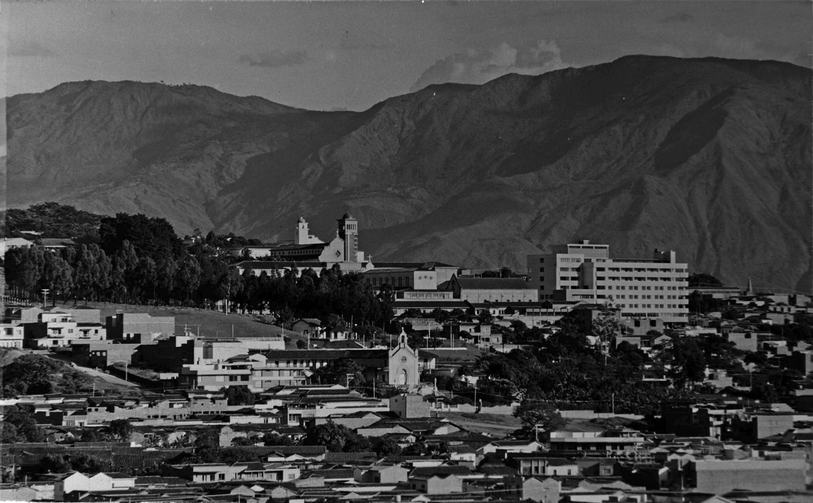
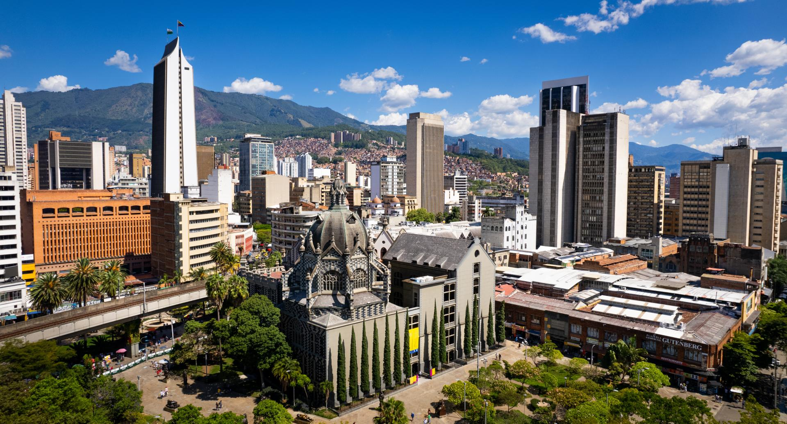

Cuando hablamos de moda, muchas veces pensamos en vitrinas, pasarelas, tendencias que cambian cada mes. Pero en Medellín, la moda es otra cosa. Es historia. Es resistencia. Es comunidad.
Esta ciudad —la de la eterna primavera, la de las montañas que abrazan— se ha convertido en el corazón textil de Colombia. No por casualidad. Desde mediados del siglo XX, Medellín fue epicentro de la industria textil nacional. Las fábricas eran parte del paisaje urbano, y el hilo corría como sangre por las venas del barrio.
Pero también fue una ciudad marcada por el estigma, por la violencia, por las cicatrices que no se ven. Y ahí es donde la moda empezó a transformarse en memoria.
Hoy Medellín brilla en eventos como Colombiamoda, que en 2025 reunió a más de 60 mil asistentes de 50 países y generó una derrama económica de 17,7 millones de dólares. Pero también brilla en los talleres comunitarios, en los diseñadores que usan retazos para contar historias, en las marcas que apuestan por la sostenibilidad y la inclusión.

La estrategia Origen Medellín, impulsada por la Alcaldía, conecta a visitantes con diseñadores, artesanos, joyeros y textileros locales. Es una forma de mostrar que aquí la moda nace del territorio y se teje con identidad.
Porque aquí, vestirse es resistir. Es decir “yo soy de aquí” con orgullo. Es tomar lo que otros desechan y convertirlo en arte. Es usar el cuerpo como lienzo para hablar de identidad, de memoria, de futuro.
Medellín es ícono de la moda porque no se conforma con seguir tendencias. Las reinventa. Las cuestiona. Las aterriza en lo cotidiano. Y tú, que caminas sus calles, que ves los murales, que sientes el pulso de sus ferias, sabes que la moda aquí no es superficial. Es profunda. Es viva.
Así que la próxima vez que te pongas algo, piensa en esto: ¿qué historia estás contando? ¿Qué memoria estás vistiendo?
